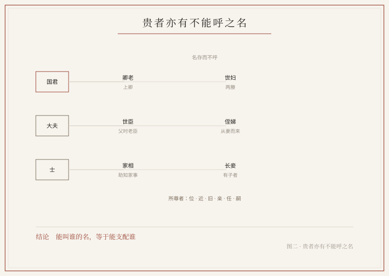

曲礼下 · 二·七 · 第 130 课
国君虽贵，不能直呼上卿与夫人之媵的名；大夫不能呼父时老臣与贵妾的名；士不能呼家相与长妾的名。
说什么事：国君不名卿老世妇，大夫不名世臣侄娣，士不名家相长妾。
落在哪一层：礼。名与权的关系，第一次正面出现。
为何编在此位：前六节讲的都是「持物」的身体；此节转到「称呼」——礼从手上移到口上。
【经】國君不名卿老世婦，大夫不名世臣侄娣，士不名家相長妾。
【注】雖貴，於其國家猶有所尊也。卿老，上卿也。世臣，父時老臣。
【疏】此一节总明称谓之事……「国君不名卿老世妇」者，人君虽有国家之贵，犹宜有所敬，不得呼其名者也。「卿老」谓上卿，上卿贵，故曰「卿老」。「世妇」者，谓两媵也，次於夫人，而贵於诸妾也。「大夫不名世臣侄娣」者，世臣，父在时老臣也。侄是妻之兄女，娣是妻之妹，从妻来为妾也。大夫不得呼世臣及贵妾名也。……「士不名家相长妾」者，家相谓助知家事者也。长妾，妾之有子者也。士不得呼此二等人名也。
名 动词，呼其名。不名，是不以名相呼。
卿老 注「上卿也」。疏「上卿贵，故曰卿老」。
世妇 疏「谓两媵也，次於夫人，而贵於诸妾」。
世臣 注「父时老臣」。与「世卿」不同：此为父在时之旧臣。
侄娣 侄为妻之兄女，娣为妻之妹，从妻来为媵妾。
家相 疏「谓助知家事者也」。
长妾 疏「妾之有子者也」。熊氏谓士一妻二妾，长妾当谓娣。
国君不直呼上卿与夫人之媵的名，大夫不直呼父时老臣与侄娣的名，士不直呼家相与有子之妾的名。
贵者有不能直呼之人。这一句把「名」从称呼技术变成了权力的边界：能叫谁的名，等于能支配谁。礼所做的，是先把这条边界画出来，让最贵的人也有不能越的地方。
第一层 不名是留位 不呼其名，呼其字、其官、其氏，都是给人留一个可站立的位置。名是登记，字是称呼；用哪一种，就是把人放在哪一种关系里。
第二层 三级各有其不名者 国君不名者二：上卿（位）、世妇（近）；大夫不名者二：世臣（旧）、侄娣（亲）；士不名者二：家相（任）、长妾（嗣）。每一级都不是随意挑的两个人，是「位、旧、亲、任、嗣」各取其一。
第三层 所尊者非唯尊 「世臣」之所以不名，因其旧；「侄娣」之所以不名，因其亲。礼所尊者，不只是权力上位，还有时间与血缘。
第四层 名与实的分离 能叫名，说明有支配之实；不叫名，说明承认有不可支配之处。这是先秦最精细的一种权力自律。
与今日何干 直呼其名并不总是平等，有时是失礼。称呼是最廉价的尊重，也是最容易漏掉的一课。
| 左 | 右 |
|---|---|
| 国君不名卿老 | 上卿，位之尊 |
| 不名世妇 | 两媵，近之尊 |
| 大夫不名世臣 | 父时老臣，旧之尊 |
| 不名侄娣 | 从妻而来，亲之尊 |
| 士不名家相 | 助知家事，任之尊 |
| 不名长妾 | 有子者，嗣之尊 |
画三级并置的名单式构图：上部一行三个小方框代表君、大夫、士的名牌，牌上只画一道短横，示意有名而不书；每级之下各引出两条细线，末端各系一枚小小的空白木牌（无名牌），共六枚，分两级排开。六枚无名牌之间以极淡的点线连成一张网。不写文字、不画人。赭色只用在最上面那枚名牌的短横上。
